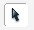

Macromedia Flash
Macromedia Flash adalah software pembuat flash berekstensi .swf. Macromedia Flash mendukung script sehingga bisa digunakan untuk membuat animasi, game, slide presentasi dan sebagainya dengan variasi yang beragam dan lebih menarik.
Mengenal animasi Frame by Frame
baiklah, saya memang tidak pandai dalam menjelaskan teori, oke langsung praktek saja 0o0)/
- Gambarlah roda seperti gambar dibawah ini pada Frame 1 di timeline:
ingat, pada frame 1 0o0)-1
- Pada Frame 2, klik kanan Mouse lalu klik Insert Keyframe
- Seleksi seluruh gambar Roda pada Frame 2,dengan menggunakan selection tool  , kemudian Putarlah Gambar Roda Beberapa derajat kekenan dengan menggunakan Icon Rotate
- Ulangi langkah 2 dan 3, dan lakukan insert keyframe pada frame 3, 4, 5, dan 6, dengan tiap frame mempunyai sudut putaran roda yang berbeda-beda
Tampilan Frame 1 sampai 6
Gambar pada tiap-tiap Frame
- Cobalah animasi Frame-By Frame dengan menekan Keyboard CTRL + ENTER
- Simpan dengan Nama ; animasi-roda-frame-by-frame
Putra R
Copyright© 2014 by Putra Rahmadi